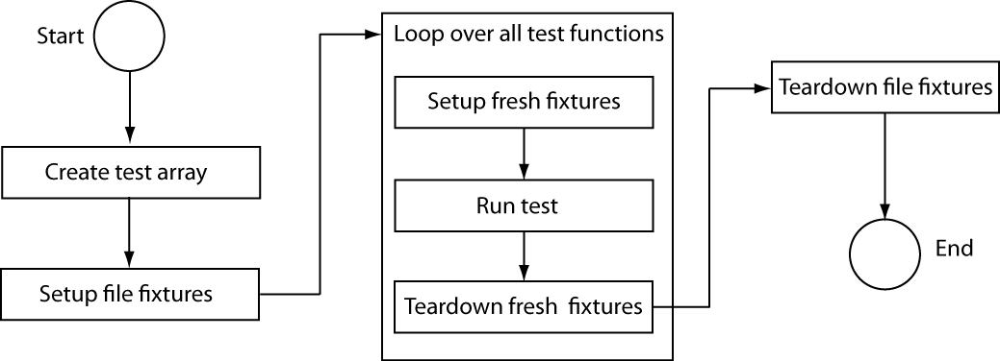

Function-Based Unit Tests
Create Test Function
A test function is a single MATLAB® file that contains a main function and your individual local test functions. Optionally, you can include file fixture and fresh fixture functions. File fixtures consist of setup and teardown functions shared across all the tests in a file. These functions are executed once per test file. Fresh fixtures consist of setup and teardown functions that are executed before and after each local test function.
Create the Main Function
The main function collects all of the local test functions into a test array.
The name of the main function corresponds to the name of your test file and
should start or end with the word 'test', which is case-insensitive. If the file
name does not start or end with the word 'test', the tests in the file might be
ignored in certain cases. In this sample case, the MATLAB file is exampleTest.m. The main function needs
to make a call to functiontests to generate a test array,
tests. Use localfunctions as the input
to functiontests to automatically generate a cell array of
function handles to all the local functions in your file. This is a typical main
function.
function tests = exampleTest tests = functiontests(localfunctions); end
Create Local Test Functions
Individual test functions are included as local functions in the same
MATLAB file as the main (test-generating) function. These test function
names must begin or end with the case-insensitive word, ‘test’. Each of the
local test functions must accept a single input, which is a function test case
object, testCase. The testing framework automatically
generates this object. For more information on creating test functions, see
Write Simple Test Case Using Functions and Table of Verifications, Assertions, and Other Qualifications.
This is a typical example of skeletal local-test functions.
function testFunctionOne(testCase) % Test specific code end function testFunctionTwo(testCase) % Test specific code end
Create Optional Fixture Functions
Setup and teardown code, also referred to as test fixture functions, set up the pretest state of the system and return it to the original state after running the test. There are two types of these functions: file fixture functions that run once per test file, and fresh fixture functions that run before and after each local test function. These functions are not required to generate tests. In general, it is preferable to use fresh fixtures over file fixtures to increase unit test encapsulation.
A function test case object, testCase, must be the only
input to file fixture and fresh fixture functions. The testing framework
automatically generates this object. The TestCase object is a
means to pass information between setup functions, test functions, and teardown
functions. Its TestData property is, by default, a
struct, which allows easy addition of fields and data.
Typical uses for this test data include paths and graphics handles. For an
example using the TestData property, see Write Test Using Setup and Teardown Functions.
File Fixture Functions. Use file fixture functions to share setup and teardown functions across
all the tests in a file. The names for the file fixture functions must be
setupOnce and teardownOnce,
respectively. These functions execute a single time for each file. You can
use file fixtures to set a path before testing, and then reset it to the
original path after testing. This is a typical example of skeletal file
fixture setup and teardown code.
function setupOnce(testCase) % do not change function name % set a new path, for example end function teardownOnce(testCase) % do not change function name % change back to original path, for example end
Fresh Fixture Functions. Use fresh fixture functions to set up and tear down states for each local
test function. The names for these fresh fixture functions must be
setup and teardown, respectively.
You can use fresh fixtures to obtain a new figure before testing and to
close the figure after testing. This is typical example of skeletal test
function level setup and teardown code.
function setup(testCase) % do not change function name % open a figure, for example end function teardown(testCase) % do not change function name % close figure, for example end
Program Listing Template
%% Main function to generate tests function tests = exampleTest tests = functiontests(localfunctions); end %% Test Functions function testFunctionOne(testCase) % Test specific code end function testFunctionTwo(testCase) % Test specific code end %% Optional file fixtures function setupOnce(testCase) % do not change function name % set a new path, for example end function teardownOnce(testCase) % do not change function name % change back to original path, for example end %% Optional fresh fixtures function setup(testCase) % do not change function name % open a figure, for example end function teardown(testCase) % do not change function name % close figure, for example end
Run the Tests
When you run function-based tests, the testing framework executes these tasks:
Create an array of tests specified by local test functions.
If the
setupOncefunction is specified, set up the pretest state of the system by running the function.For each test, run the corresponding local test function. If the
setupfunction is specified, run it before running the local test function. If theteardownfunction is specified, run it after running the local test function.If the
teardownOncefunction is specified, return the pretest state of the system to the original state by running the function.

To run tests from the command prompt, use the runtests function
with your MATLAB test file as input. For example:
results = runtests('exampleTest.m')
Alternatively, you can run tests using the run function.
results = run(exampleTest)
For more information on running tests see runtests and Run Tests for Various Workflows.
Analyze the Results
To analyze the test results, examine the output structure from
runtests or run. For each test, the result
contains the name of the test function, whether it passed, failed, or did not
complete, and the time it took to run the test. For more information, see Analyze Test Case Results and
Analyze Failed Test Results.
See Also
runtests | functiontests | localfunctions